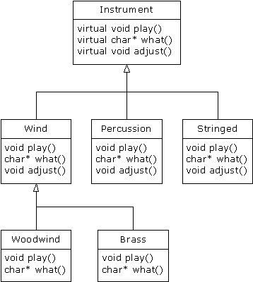

在面向对象的设计中，c++使用virtual关键字后 “＝0”定义一个纯虚函数，纯虚函数实现了抽象类，抽象类不能产生任何实例，仅提供借口。
Often in a design, you want the base class to present only an interface for its derived classes. That is, you don’t want anyone to actually create an object of the base class, only to upcast to it so that its interface can be used. This is accomplished by making that class abstract, which happens if you give it at least one pure virtual function. You can recognize a pure virtual function because it uses the virtual keyword and is followed by = 0. If anyone tries to make an object of an abstract class, the compiler prevents them. This is a tool that allows you to enforce a particular design.
当派生类继承了抽象类，则所有的纯虚函数必须被实现，否则派生类也将变成一个抽象类。纯虚函数强制要求派生类提供一个纯虚函数的定义。
When an abstract class is inherited, all pure virtual functions must be implemented, or the inherited class becomes abstract as well. Creating a pure virtual function allows you to put a member function in an interface without being forced to provide a possibly meaningless body of code for that member function. At the same time, a pure virtual function forces inherited classes to provide a definition for it.__
在C++ 多态中Instrument的例子中可以设计Instrument类为抽象类，用来提供抽象的接口。

当需要通过一些共有接口来操作一系列的类时，我们就可以通过纯虚函数来实现抽象类提供公共接口，这些公共接口并不一定要去实现或者完全实现
You create an abstract class when you only want to manipulate a set of classes through a common interface, but the common interface doesn’t need to have an implementation (or at least, a full implementation).
纯虚函数声明如下(Here is the syntax used for a pure virtual declaration:)
virtual void f() = 0;声明了纯虚函数之后，告诉编译器要在虚函数表VTABLE中保留一些函数的槽，但是不在特定的槽中放置特定的地址。即使类中只有一个函数被声明为纯虚函数，虚函数表也是不完整的。
By doing this, you tell the compiler to reserve a slot for a function in the VTABLE, but not to put an address in that particular slot. Even if only one function in a class is declared as pure virtual, the VTABLE is incomplete.
如果类的虚函数表VTABLE是不完整的，会导致不安全的创建一个抽象类的实例，因此会得到编译器的错误
If the VTABLE for a class is incomplete, what is the compiler supposed to do when someone tries to make an object of that class? It cannot safely create an object of an abstract class, so you get an error message from the compiler. Thus, the compiler guarantees the purity of the abstract class. By making a class abstract, you ensure that the client programmer cannot misuse it.
如下是修改了之前Instrument的例子
//// Created by 王若璇 on 17/3/27.////: C15:Instrument5.cpp// Pure abstract base classesusing namespace std;enum note { middleC, Csharp, Cflat }; // Etc.class Instrument {public: // Pure virtual functions: virtual void play(note) const = 0; virtual char* what() const = 0; // Assume this will modify the object: virtual void adjust(int) = 0; ///派生类必须实现基类所有的纯虚函数，否则会发生编译错误// virtual void foo() const = 0;};// Rest of the file is the same ...class Wind : public Instrument {public: void play(note) const { cout << "Wind::play" << endl; } char* what() const { return "Wind"; } void adjust(int) {}};class Percussion : public Instrument {public: void play(note) const { cout << "Percussion::play" << endl; } char* what() const { return "Percussion"; } void adjust(int) {}};class Stringed : public Instrument {public: void play(note) const { cout << "Stringed::play" << endl; } char* what() const { return "Stringed"; } void adjust(int) {}};class Brass : public Wind {public: void play(note) const { cout << "Brass::play" << endl; } char* what() const { return "Brass"; }};class Woodwind : public Wind {public: void play(note) const { cout << "Woodwind::play" << endl; } char* what() const { return "Woodwind"; }};// Identical function from before:void tune(Instrument& i) { // ... i.play(middleC);}// New function:void f(Instrument& i) { i.adjust(1); }int main() { Wind flute; Percussion drum; Stringed violin; Brass flugelhorn; Woodwind recorder; tune(flute); tune(drum); tune(violin); tune(flugelhorn); tune(recorder); f(flugelhorn);} ///:~注意：纯虚函数避免了抽象类被值传递，因此这也是一种避免对象切片的方法。通过构造一个抽象类可以保证指针或者引用在被向上转型到那个类的时候是有效的
Note that pure virtual functions prevent an abstract class from being passed into a function by value. Thus, it is also a way to prevent object slicing (which will be described shortly). By making a class abstract, you can ensure that a pointer or reference is always used during upcasting to that class.
尽管纯虚函数可以使虚函数表是不完整的，这也并不意味着不想要其他的函数体。通常我们期望调用一个基类版本的函数，尽管该函数是虚的。将共同的代码尽可能的放置在离继承集团的根部较近的位置是一个不错选择。这样不仅节省了代码空间，而且代价更小的变化传播。
Just because one pure virtual function prevents the VTABLE from being completed doesn’t mean that you don’t want function bodies for some of the others. Often you will want to call a base-class version of a function, even if it is virtual. It’s always a good idea to put common code as close as possible to the root of your hierarchy. Not only does this save code space, it allows easy propagation of changes.
##纯虚函数的定义（Pure virtual definitions） 有可能在基类中提供一个纯虚函数的定义。根据之前纯虚函数的定义，已经告知编译器不允许产生抽象类的实例，并且基类必须定义纯虚函数，这样才能使派生类能够产生对象。然而，有一些所有派生类都要使用的公共代码，但是如果在每个派生类中重写代价太大，这时候就需要在基类中定义纯虚函数而不是在每个派生类方法中重写。
It’s possible to provide a definition for a pure virtual function in the base class. You’re still telling the compiler not to allow objects of that abstract base class, and the pure virtual functions must still be defined in derived classes in order to create objects. However, there may be a common piece of code that you want some or all of the derived class definitions to call rather than duplicating that code in every function.
注意不要在抽象类中定义纯虚函数，要在外部定义
//: C15:PureVirtualDefinitions.cpp// Pure virtual base definitionsusing namespace std;class Pet {public: virtual void speak() const = 0; virtual void eat() const = 0; // Inline pure virtual definitions illegal: //! virtual void sleep() const = 0 {}};// OK, not defined inlinevoid Pet::eat() const { cout << "Pet::eat()" << endl;}void Pet::speak() const { cout << "Pet::speak()" << endl;}class Dog : public Pet {public: // Use the common Pet code: void speak() const { Pet::speak(); } void eat() const { Pet::eat(); }};int main() { Dog simba; // Richard's dog simba.speak(); simba.eat();} ///:~在上述代码中，Pet类的VTABLE虚函数表的槽仍然为空，但是可以在派生类中通过基类名字调用定义在基类的函数
The slot in the Pet VTABLE is still empty, but there happens to be a function by that name that you can call in the derived class.
这个方法可以实现
This is a way for you to locate classes that don’t override that virtual function.